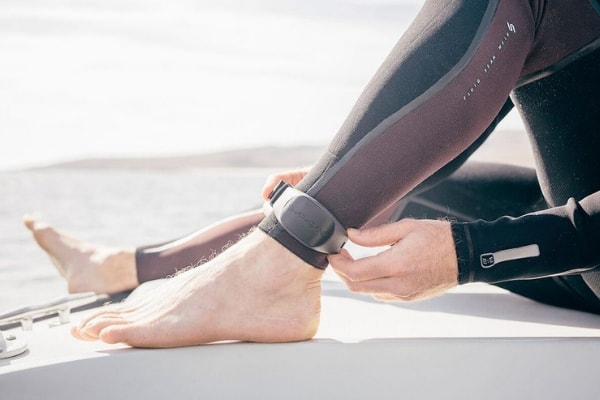

feet wearable
Hello wearable technology feet one

“We’ve developed a proprietary technology that we have integrated into the midsole of the sneaker that converts audio signals into vibrations,” said Paley. “When these vibrations are delivered through your feet and synchronized with what you hear in your ears, it is a completely transformative experience for digital entertainment. Although initially envisioned to recreate the energy of live music, adding this immersion layer to gaming, movies and VR is the next level.”
Hello wearable technology feet two

Footwear specs:
- Compatible with all Bluetooth headphones using – Class 1 Bluetooth® 4.2
- Compatible with iPhone (iOS 11 and later) and Android phones (Android 6 and later)
Up to 6 hours of battery life
- Optional Low-Latency cable for gaming and music recording applications
- Safe-detach Magnetic Charge Connectors
- Water-Resistant
- One-Year Limited Warranty
DropLabs was named an official partner with When We All Vote, a non-profit on a mission to register all eligible voters for the upcoming Fall elections.